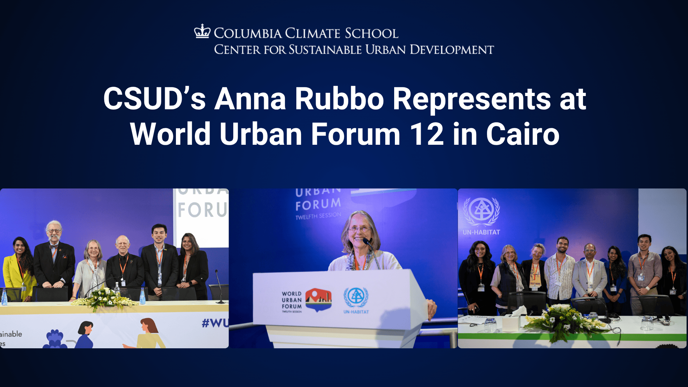
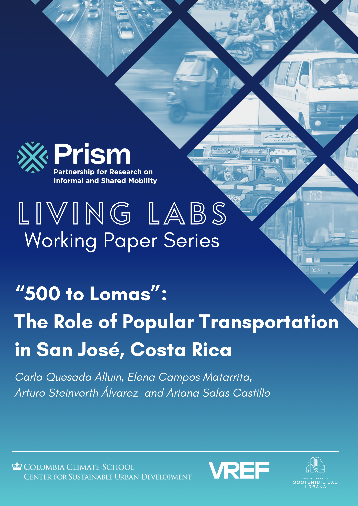
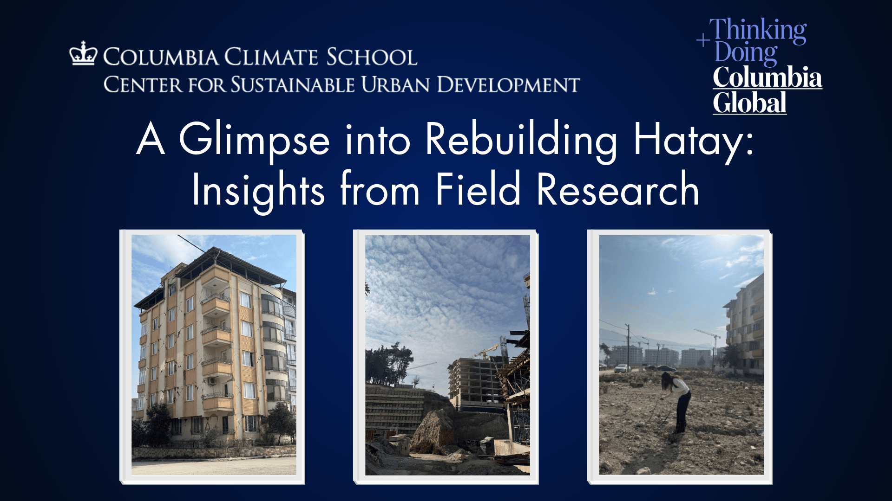
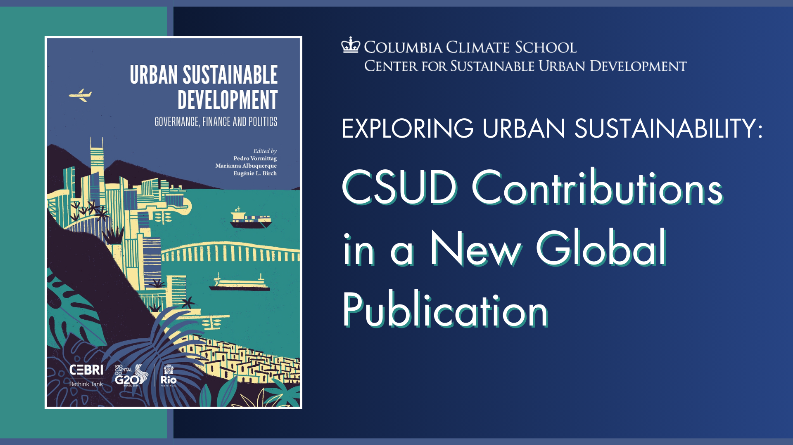
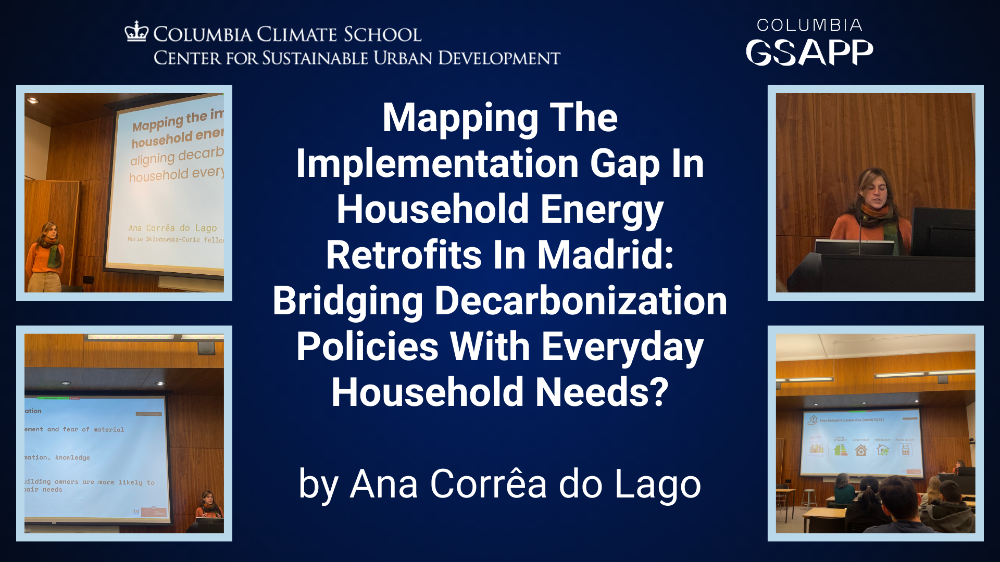
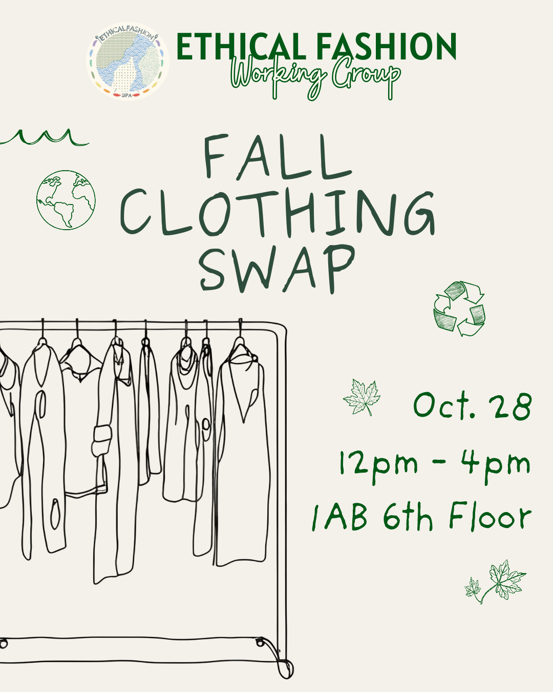
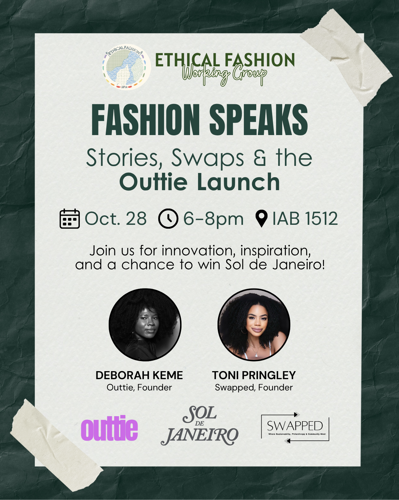
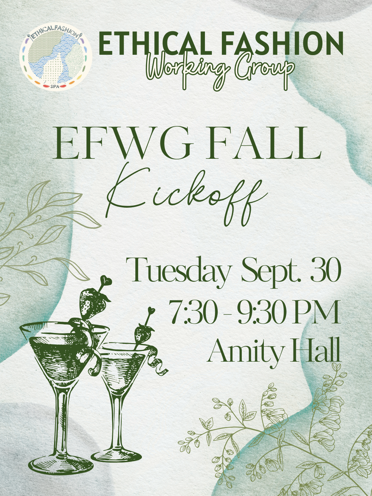
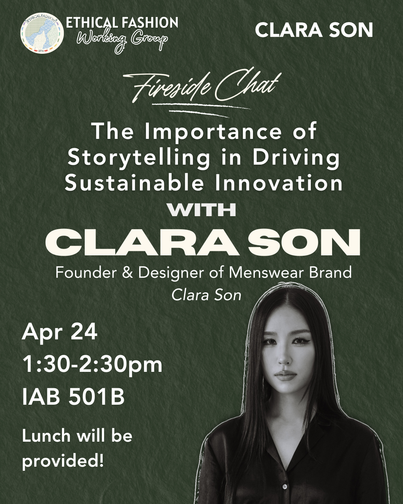

Experience
Graduate Intern
United Nations ESCAP: Gender Equality & Social Inclusion Section · Bangkok, Thailand
- Synthesized complex gender equality and inclusion research by translating multi-country findings into visually structured policy briefs and presentation decks, enabling policymakers to quickly grasp insights and apply them in program design.
- Collaborated with cross-functional teams across member states to design high-impact presentations, speeches, and workshop materials, strengthening narrative clarity and improving engagement in high-level convenings.
Communications Associate
Columbia Climate School: Center for Sustainable Urban Development · New York, NY
- Translated research outputs into accessible communication products including web content, newsletters, and event materials to broaden the Center's public reach.
- Supported the development of visual assets and messaging frameworks for academic and practitioner audiences across sustainability and urban development initiatives.

Sample
Sample

Sample
Sample
SampleKnowledge Management Coordinator
The World Bank: Development Impact Group (DIME) · Washington, D.C.
- Led development of data-driven communication campaigns by translating impact evaluation findings into compelling visual stories and digital assets, increasing donor and media engagement by 70%.
- Established and scaled a unified visual identity system by aligning digital content, templates, and communication assets across teams, strengthening brand consistency for 200+ projects.
- Collaborated with researchers, designers, and leadership to prototype and iterate communication products, improving clarity and usability of research outputs for non-technical audiences.
Program Coordinator
The World Bank: Development Impact Group (DIME) · Washington, D.C.
- Redesigned department-wide communications by improving layout, hierarchy, and visual clarity across materials, enhancing engagement across a 40,000+ stakeholder network.
- Led the design and launch of a multi-conference website by structuring user flows and content architecture, improving attendee experience and navigation across 9 global events.
- Developed a comprehensive brand and style guide to standardize visual and narrative communication, enabling consistent storytelling across 235+ projects.
Program Assistant — DIME Analytics & Knowledge Management
The World Bank: Development Impact Group (DIME) · Washington, D.C.
- Designed and produced newsletters and reports by structuring content into clear visual formats and layouts, improving internal knowledge sharing and readability.
- Created engaging course materials and learning experiences by combining visual design and content development, supporting training delivery for 1,000+ participants.
- Managed engaging courses by coordinating with presenters, communicating with participants, and creating impactful course content to facilitate knowledge sharing on impact evaluation methods.
Intern — Learning, Empowerment & Adolescent Development
BRAC USA · Washington, D.C.
- Translated program data into compelling visual and written narratives by developing reports and capacity statements, strengthening positioning for partnership and funding opportunities.
Intern — Community Level Child Protection
Plan International USA · Washington, D.C.
- Synthesized qualitative research across global teams by organizing and translating interviews into structured insights and presentation materials, supporting integration of user-centered perspectives into reports.
Program Assistant Intern
International Lifeline Fund · Washington, D.C.
- Executed research and content creation for program proposals and donor reports to support fundraising and remain compliant with donor requirements.
- Authored communications materials to ensure the website was up-to-date and that key stakeholders remained informed.
Intern — Central and East Africa Program
Search for Common Ground · Washington, D.C.
- Created donor-facing communication materials by designing and updating web and report content, improving clarity and consistency of organizational messaging.
- Synthesized and analyzed data for project documents, capacity statements, and financial reports demonstrating transparency and accountability to existing and potential donors.
Leadership & Community Service
Communications and Social Media Chair
SIPA Ethical Fashion Working Group · Columbia University
- Led all external communications and social media for the organization, producing event flyers, promotional graphics, and animated content across platforms.


Sample
Sample
Sample
SampleVolunteer Assistant
World Food Programme · Nairobi, Kenya
- Reviewed policies and created reports for acute malnutrition programs to improve tracking and streamlining of nutrition services for vulnerable populations.
- Identified gaps and made amendments to WFP's cash-based transfers business process model to reduce operational challenges across 70+ countries using the SCOPE digital humanitarian aid delivery platform.
Family and Youth Mentor — Refugee Resettlement Program
Lutheran Social Services · Washington, D.C.
- Engaged with refugee families to facilitate cultural acclimation and parental involvement in children's education through navigation of local education systems.
- Assisted three special needs children (ages 4, 12, and 20) with literacy attainment, ESL instruction, and homework support.